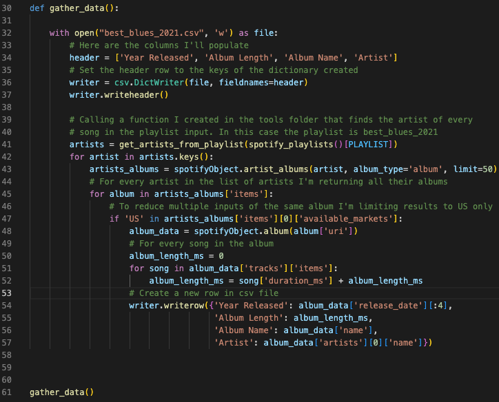
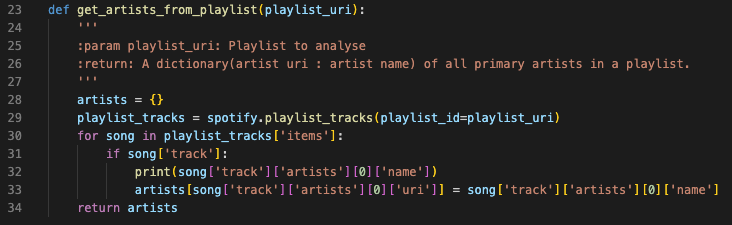
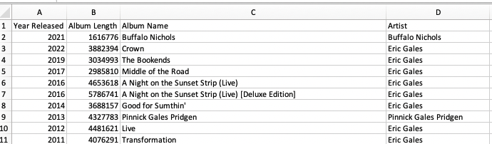
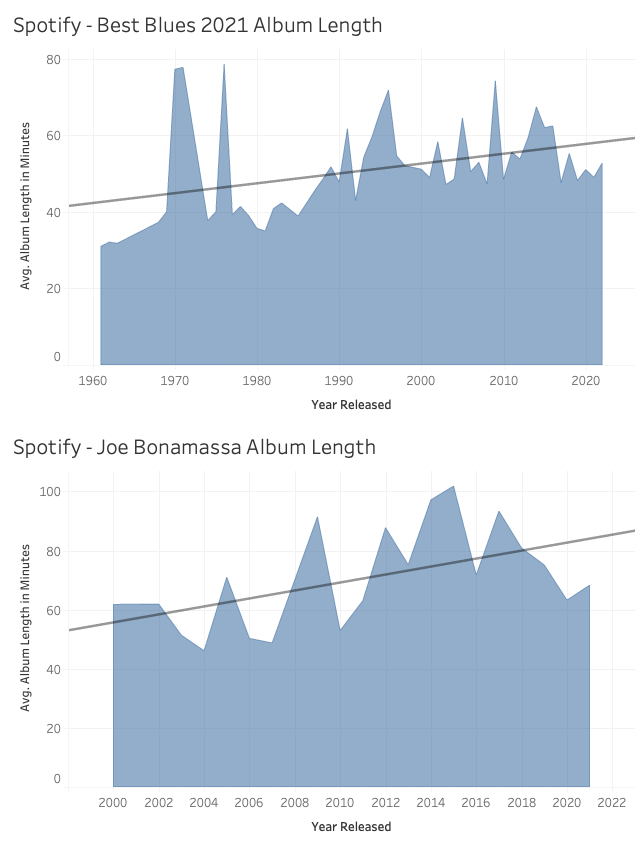

Project information
- Category: Data Engineering
- Project Name: Spotipy Spotify Pipeline / Analysis
- Project date: April 25, 2022
- Project Code: GitHub
Spotipy Spotify Pipeline / Analysis
Since I was young, I've had a passion for music. I thought it would be fun to analyze song length over the years. To complete the analysis, I use the Spotipy package to import song data from Spotify. The final analysis is presented in Tableau.

In the first section of this function I am establishing the dictionary that will be output. Next, I'm creating the file using the headers established in the previous section.
Next is where the fun starts, for object artists, I'm returning the name of all artists in the playlist Best Blues 2021. This is a popular blues playlist on Spotify. Now that I have all the names of the artists I'll use that information to look up all their albums released in the US. I restrict the data to US releases only as some albums are released in several countries and I do not want to skew the results.

Above is a snip of the function that is called in row 41 of the previous function (gather_data). The function retrieves all the artists from the playlist.
CSV data created

As you can see from this screenshot we now have the data required to answer the question. Are Blues albums getting longer as the years go on?
Analysis / Summary

Based on the artists that I analyzed today, you will see there is a clear correlation indicating that albums are getting longer.
The top analysis is the average of all album lengths. I was feeling a bit skeptical of the results so I filter the second chart to only show Joe Bonamassa (fantastic blues artist) and his albums showed the same results.
I don't think it's fair to summarize all blues albums based on 50 artists but it does show some interesting results.